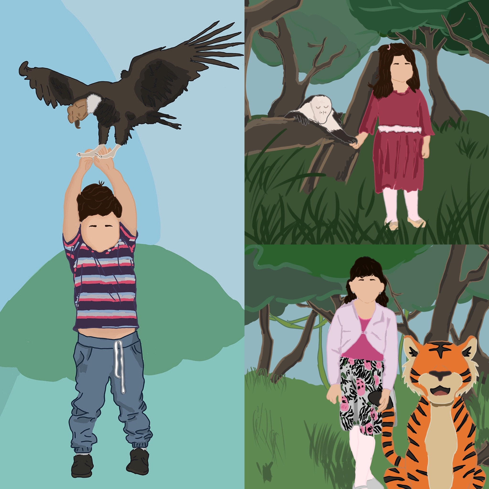

The Mountain side

I drew this landscape drawing of mountains, to represent the days of going outside. The area I live in Ecuador is surround by mountains. People used to climb this very tall mountain called Imbabura and this represents the moutains that surround me.
Artwork of Ecuadorian Children
These projects I created was during this quarantine. My mother asked me to create these images for children in our area for some encouragement. So I drew them with their favorite animal.
The Anniversary

I drew this picture my aunt and uncles 15th anniversary. I based it on their enagement pictures of them in the Post Alley in Seattle.